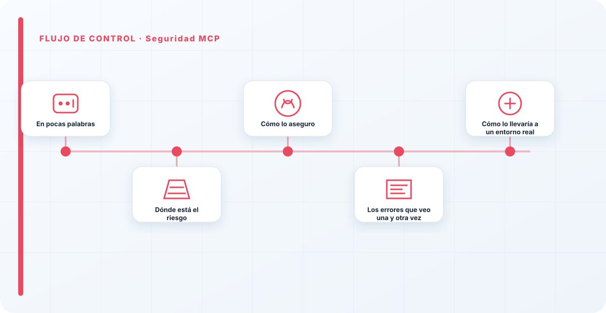
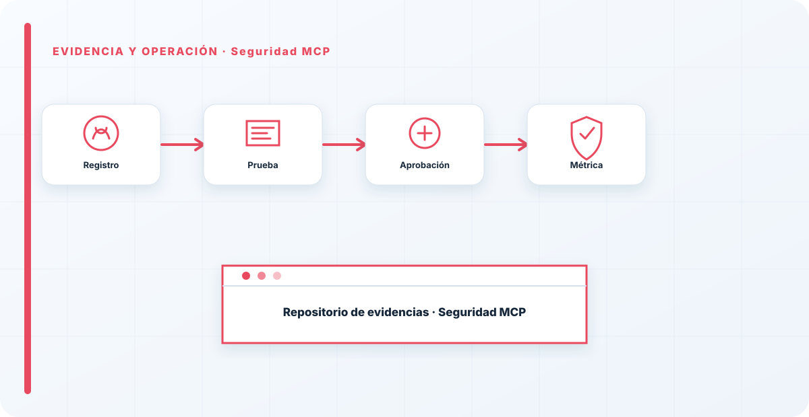

En pocas palabras
Un MCP —el mecanismo que conecta un modelo o agente con herramientas y datos— es, en términos de seguridad, una dependencia con acceso a tu información. Y a las dependencias con acceso se las revisa antes de dejarlas entrar en casa. El problema es que los MCP se instalan hoy con la misma ligereza con la que antes se instalaba cualquier plugin: se encuentra uno en un repositorio, se conecta y se le da acceso a producción el mismo día. Eso es cadena de suministro sin control, y es por donde se cuelan los problemas que luego cuesta muchísimo detectar.
Dónde está el riesgo
Un MCP se sitúa en un punto privilegiado: entre tu modelo y tus datos. Desde ahí puede ver y hacer mucho. Un conector malicioso —o simplemente mal hecho o vulnerable— puede filtrar información, ejecutar acciones no previstas o convertirse en el eslabón por el que entra un atacante. Es el mismo riesgo que cualquier componente de terceros con permisos, pero con una capa extra propia de la IA: como se comunica en lenguaje con el modelo, también puede ser una vía de inyección indirecta. Tratarlo como "una integración más" es subestimar dónde está colocado.
Y hay un agravante de cadena de suministro: un mismo MCP puede estar conectado en varios sistemas. Si es vulnerable, no tienes un problema, tienes tantos como sitios donde lo enchufaste.
Cómo lo aseguro
Revisión antes de conectar: de dónde viene, quién lo mantiene, qué permisos pide y qué hace realmente, no lo que promete su descripción. Mínimo privilegio en lo que le doy acceso —un MCP casi nunca necesita ver toda tu información para hacer su trabajo concreto—. Aislamiento de su ejecución, para contener el daño si se compromete. Y tratarlo como parte de la cadena de suministro de IA: inventariado, con su procedencia registrada, y sujeto a revisión cada vez que se actualiza.
Nada de esto es exótico: es la disciplina de gestión de dependencias que ya aplicas al software, llevada a un componente nuevo que mucha gente todavía no vive como lo que es.

La velocidad con la que se conectan MCP y plugins hoy me recuerda a los primeros días de las tiendas de apps: todo el mundo instalando de todo sin mirar quién había detrás. Un MCP tiene acceso a tus datos; merece al menos la misma revisión que darías a un proveedor. Si no sabes quién mantiene un conector y qué hace con lo que ve, no lo conectes a producción, por muy cómodo que sea. La facilidad de conectar no reduce el riesgo, solo lo esconde.
Los errores que veo una y otra vez
- Instalar un MCP y darle acceso a producción el mismo día, sin revisión.
- No mirar la procedencia ni quién lo mantiene.
- Darle más permisos de los que necesita.
- Ejecutarlo sin aislamiento.
- No inventariarlo ni comprobar en cuántos sistemas está conectado.
Cómo lo llevaría a un entorno real
Cuando aterrizo seguridad mcp en una organización, no empiezo por comprar una herramienta ni por redactar veinte páginas. Empiezo por dibujar qué ocurre hoy: quién solicita el cambio, quién lo aprueba, qué sistemas intervienen, qué datos cruzan el proceso y quién se entera cuando algo falla. Ese dibujo suele descubrir más problemas que cualquier checklist. En seguridad de IA, lo peligroso no es solo carecer de controles; también lo es creer que existen porque alguien los escribió una vez.
Después separo lo imprescindible de lo deseable. Lo imprescindible debe poder comprobarse: un responsable identificado, una regla clara, una evidencia fechada y un mecanismo para reaccionar. En este caso revisaría especialmente servidores MCP, manifests y tools. No me vale una respuesta del tipo «lo gestiona el proveedor» o «eso lo mira seguridad». Necesito saber qué persona toma la decisión, con qué información y dentro de qué plazo.
La implantación debe crecer con el riesgo. Un piloto interno puede funcionar con una ficha breve y una revisión manual. Un sistema que afecta a clientes, empleados, dinero o información sensible necesita segregación de funciones, pruebas independientes, monitorización y un expediente mantenido. Mi criterio es sencillo: cuanto más difícil sea deshacer el daño, más fuerte debe ser la barrera antes de producción.
Decisiones que deben quedar por escrito
Hay decisiones que no deberían vivir en una reunión ni en un mensaje de chat. Para seguridad mcp dejaría documentados el alcance, los supuestos, los límites de uso, las excepciones aceptadas y las condiciones que obligan a detener o reevaluar. El documento no tiene que ser enorme, pero sí debe permitir que otra persona entienda por qué se hizo lo que se hizo.
También registraría quién puede cambiar scopes, quién valida publishers y quién recibe las alertas relacionadas con versiones. Cuando esas tres responsabilidades se mezclan, aparece el clásico problema: el mismo equipo construye, aprueba y declara que todo funciona. No siempre se puede separar por completo, sobre todo en organizaciones pequeñas, pero al menos debe existir una revisión por alguien que no dependa del éxito inmediato del despliegue.
Las excepciones merecen un tratamiento propio. Una excepción sin fecha de caducidad acaba convirtiéndose en la arquitectura real. Por eso exigiría motivo, riesgo aceptado, responsable, compensaciones, fecha de revisión y criterio de cierre. Si falta uno de esos elementos, no es una excepción gestionada; es una deuda invisible.
Un ejemplo práctico
Imaginemos que un equipo quiere incorporar seguridad mcp a un servicio que ya está en producción. La propuesta promete reducir tiempos y automatizar tareas, pero utiliza componentes que cambian con frecuencia. Antes de aprobarlo, pediría una prueba limitada, un inventario de dependencias, un flujo de datos y una definición clara de qué acciones quedan fuera del alcance.
Durante la prueba recogería resultados normales y casos límite. No solo miraría si funciona; comprobaría qué ocurre cuando faltan datos, cambia una versión, se pierde conectividad, llega una entrada manipulada o un usuario intenta superar sus permisos. Ahí es donde se ve si el diseño aguanta. En muchas pruebas felices todo parece seguro porque nadie ha intentado romper la hipótesis de partida.
Si los resultados son aceptables, la salida a producción tendría condiciones: versión fijada, configuración aprobada, logs disponibles, responsables de guardia, procedimiento de rollback y revisión tras las primeras semanas. Si alguno de esos elementos no existe, prefiero retrasar el despliegue. Un día de demora suele ser más barato que investigar después un comportamiento que nadie puede reconstruir.

Qué evidencias guardaría
Para demostrar que el control funciona conservaría evidencias que cuenten una historia completa, no capturas sueltas. La historia debe enlazar necesidad, decisión, implementación, prueba y operación. En seguridad mcp eso incluye como mínimo la ficha del activo, el diagrama vigente, la configuración aprobada, el resultado de las pruebas y el registro de cambios.
No guardaría información por acumular. Si los logs contienen prompts, documentos, datos personales o secretos, aplicaría minimización, control de acceso y retención. La evidencia debe ayudar a investigar y auditar sin crear una segunda fuga de información. Es frecuente endurecer el sistema principal y dejar un repositorio de evidencias abierto a demasiadas personas.
- Propietario y finalidad de seguridad mcp, con fecha de revisión.
- Inventario de servidores MCP, manifests y dependencias asociadas.
- Criterios de aceptación y resultados sobre tools y scopes.
- Configuración efectiva, versión y aprobación del cambio.
- Alertas, incidentes, excepciones y acciones correctivas cerradas.
Señales de que el control no está funcionando
El primer síntoma es que nadie sabe responder con rapidez quién es el responsable. El segundo es que la documentación describe una versión distinta de la que está operando. El tercero es que las alertas existen, pero llegan a un buzón que nadie revisa. Cuando aparecen esos tres síntomas, el problema no es tecnológico: el control se ha desconectado de la operación.
También desconfío de las métricas demasiado perfectas. Cero incidentes, cero excepciones y cien por cien de cumplimiento pueden significar excelencia, pero con frecuencia significan que no estamos mirando. Prefiero indicadores que enseñen tendencia: tiempo de corrección, antigüedad de excepciones, cobertura de pruebas, cambios sin revisión y reincidencias.
Por último, revisaría el comportamiento después de cada cambio significativo. En IA, una actualización de modelo, dataset, prompt, herramienta, permiso o proveedor puede alterar el riesgo sin cambiar el nombre del servicio. Si el proceso solo reevalúa cuando se crea un proyecto nuevo, se quedará ciego durante la mayor parte de la vida útil.
Mi criterio de cierre
Considero que seguridad mcp está razonablemente controlado cuando el equipo puede explicar el proceso sin depender de una sola persona, reconstruir una decisión con evidencias y detener el servicio sin improvisar. No busco perfección documental; busco que la organización pueda tomar decisiones repetibles bajo presión.
El cierre no consiste en marcar todas las casillas. Consiste en demostrar que los riesgos relevantes tienen propietario, que los controles se prueban y que las desviaciones producen una acción. Si la evidencia no cambia ninguna decisión, probablemente estamos generando burocracia. Si una decisión importante no deja evidencia, estamos creando fragilidad.
Este enfoque es el que intento mantener en toda CyberLibrary AI: explicar el control de forma que lo entienda negocio, pero con suficiente profundidad para que arquitectura, seguridad, auditoría y operaciones puedan aplicarlo de verdad.
Referencias y marcos relacionados
Contenido educativo y técnico. No sustituye asesoramiento jurídico ni una auditoría formal.